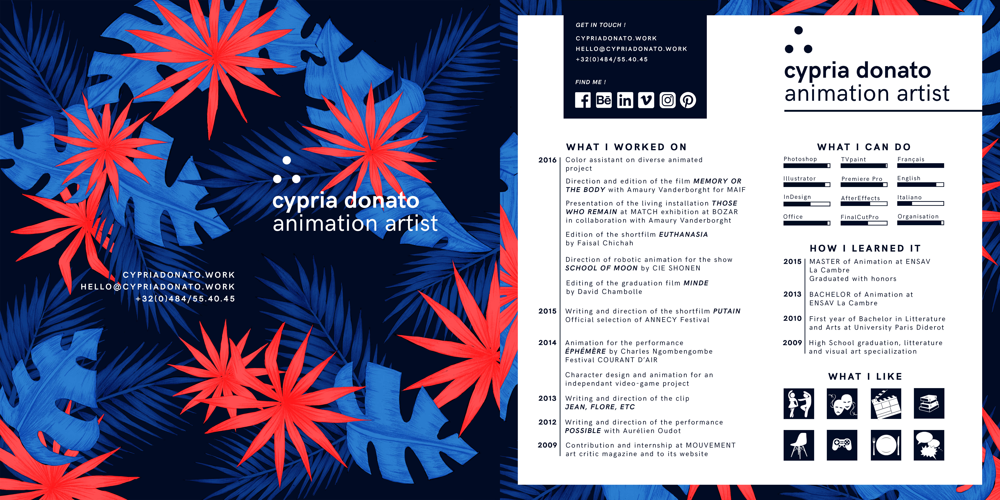

Get in touch:
Find me here:
About me:
After a detour by art theory and critic in Paris, I continued my studies in animated films at ENSAV La Cambre in Brussels, where I obtained my Master degree in 2015. While my graduation film "putain" travels festivals around the world, I try to transport my practice of drawn movement to different fields, such as performing arts, robotic and video.
Curriculum Vitae:

Permalink to this page